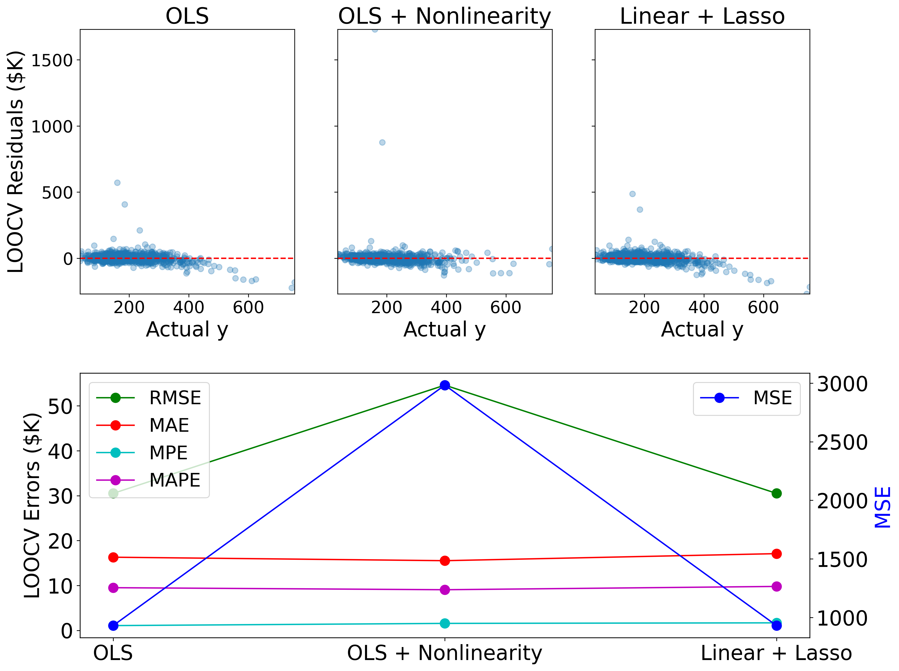

Recognize Emotions from Facial Images with Convolutional Neural Networks
github
Project Goal
Recognize emotions from static facial images
Available Dataset
20K facial images sorted into 4 emotion classes: happy, sad, surprise, neutral
Dataset Challenges
Illumination, camera viewpoint, watermarks, occlusions, misalignment
Dataset Issues
Mislabeled images, images without faces, duplicate images with conflicting labels
Data Cleaning
Facial detection model to exclude images without faces
Image hashing to exclude duplicate images
Unseen Test Data Performance
One box is labeled 'Sad' but misclassified as 'Neutral'. The other is labeled 'Neutral' but misclassified as 'Sad'. Can you identify which is which?
Predict Passenger Satisfaction with Random Forest and XGBoost
github
Project Goal
Predict passenger satisfaction with their experience traveling on the Shinkansen Bullet Train
Hackathon Leaderboard
XGBoost Model with 95.58% accuracy achieved 6th place out of 57 teams
The 1st place model acheived accuracy of 95.82%
Follow-Up Queries
95.58% accuracy may be improved by addressing feature anomalies
Use Socio-Economic Factors for Geographic Clustering
github
Project Goal
Determine distinct geographic clusters from socio-economic factors
Clustering Methods
K-means, K-medoids, Gaussian mixture models, and hierarchical clustering approaches suggest 2 main distinct geographic clusters
Predict House Prices with Linear Regression
github

Model Insights
The factors that result in the largest increase in home value are square footage of above ground living area and select quality ratings (overall, exterior material, kitchen)
Legitimate Outliers
There are legitimate outliers in the dataset that are biasing the models toward under-predicting sale prices
Publications
Ab initio carbon capture in open-site metal-organic frameworks. A. L. Dzubak, L. -C. Lin, J. Kim, J. A. Swisher, R. Poloni, S. N. Maximoff, B. Smit, and L. Gagliardi. Nature Chem. 4, 810 (2012)
Oxidation of ethane to ethanol by N2O in a metal-organic framework with coordinatively unsaturated iron(II) sites. D. J. Xiao, E. D. Bloch, J. A. Mason, W. L. Queen, M. R. Hudson, N. Planas, J. Borycz, A. L. Dzubak, P. Verma, K. Lee, F. Bonino, V. Crocella, J. Yano, S. Bordiga, D. G. Truhlar, L. Gagliardi, C. M. Brown, and J. R. Long. Nature Chem. 6, 590 (2014)
Quantitative estimation of localization errors of 3d transition metal pseudopotentials in diffusion Monte Carlo. A. L. Dzubak, J. T. Krogel, and F. A. Reboredo. J. Chem. Phys. 147, 024102 (2017)
MnNiO3 revisited with modern theoretical and experimental methods. A. L. Dzubak, C. Mitra, M. Chance, S. Kuhn, G. E. Jellison Jr., A. S. Sefat, J. T. Krogel, and F. A. Reboredo. J. Chem. Phys. 147, 174703 (2017)
CrI3 revisited with a many-body ab initio theoretical approach. T. Ichibha, A. L. Dzubak, J. T. Krogel, V. R. Cooper, and F. A. Reboredo. Phys. Rev. Mat. 5, 064006 (2021)
Cooperative insertion of CO2 in diamine-appended metal-organic frameworks. T. M. McDonald, J. A. Mason, X. Kong, E. D. Bloch, D. Gygi, A. Dani, V. Crocella, F. Giordanino, S. O. Odoh, W. S. Drisdell, B. Vlaisavljevich, A. L. Dzubak, R. Poloni, S. K. Schnell, N. Planas, K. Lee, T. Pascal, L. F. Wan, D. Prendergast, J. B. Neaton, B. Smit, J. B. Kortright, L. Gagliardi, S. Bordiga, J. A. Reimer, and J. R. Long. Nature 519, 303 (2015)
The mechanism of carbon dioxide adsorption in an alkylamine-functionalized metal-organic framework. N. Planas, A. L. Dzubak, R. Poloni, L. -C. Lin, A. McManus, T. M. McDonald, J. B. Neaton, J. R. Long, B. Smit, and L. Gagliardi. J. Am. Chem. Soc. 135, 7402 (2013)
Design of a metal-organic framework with enhanced back bonding for the separation of N2 and CH4. K. Lee, W. C. Isley III, A. L. Dzubak, P. Verma, S. J. Stoneburner, L. -C. Lin, J. D. Howe, E. D. Bloch, D. A. Reed, M. R. Hudson, C. M. Brown, J. R. Long, J. B. Neaton, B. Smit, C. J. Cramer, D. G. Truhlar, and L. Gagliardi. J. Am. Chem. Soc. 136, 698 (2014)
Reversible CO binding enables tunable CO/H2 and CO/N2 separations in metal-organic frameworks with exposed divalent metal cations. E. D. Bloch, M. R. Hudson, J. A. Mason, S. Chavan, V. Crocella, J. D. Howe, K. Lee, A. L. Dzubak, W. L. Queen, J. M. Zadrozny, S. J. Geier, L. -C. Lin, L. Gagliardi, B. Smit, J. B. Neaton, S. Bordiga, C. M. Brown, and J. R. Long. J. Am. Chem. Soc. 136, 10752 (2014)
CO2 induced phase transitions in diamine-appended metal-organic frameworks. B. Vlaisavljevich, S. O. Odoh, S. K. Schnell, A. L. Dzubak, K. Lee, N. Planas, J. B. Neaton, L. Gagliardi, and B. Smit. Chem. Sci. 6, 5177 (2015)
Uranyl-peroxide nanocapsules in aqueous solution: Force field development and first applications. P. Miro, B. Vlaisavljevich, A. L. Dzubak, S. Hu, P. C. Burns, C. J. Cramer, R. Spezia, and L. Gagliardi. J. Phys. Chem. C 118, 24730 (2014)
CO2 adsorption in Fe2(dobdc): A classical force field parameterized from quantum mechanical calculations. J. Borycz, L. -C. Lin, E. D. Bloch, J. Kim, A. L. Dzubak, R. Maurice, D. Semrouni, K. Lee, B. Smit, and L. Gagliardi. J. Phys. Chem. C 118, 12230 (2014)
A combined spectroscopic and computational study of a high-spin S=7/2 diiron complex with a short iron-iron bond. C. M. Zall, D. Zherebetskyy, A. L. Dzubak, E. Bill, L. Gagliardi, and C. C. Lu. Inorg. Chem. 51, 728 (2012)
Assessing metal-metal multiple bonds in Cr-Cr, Mo-Mo, and W-W compounds and a hypothetical U-U compound: A quantum chemical study comparing DFT and multireference methods. G. Li Manni, A. L. Dzubak, A. Mulla, D. W. Brogden, J. F. Berry, and L. Gagliardi. Chem. Eur. J. 18, 1737 (2012)